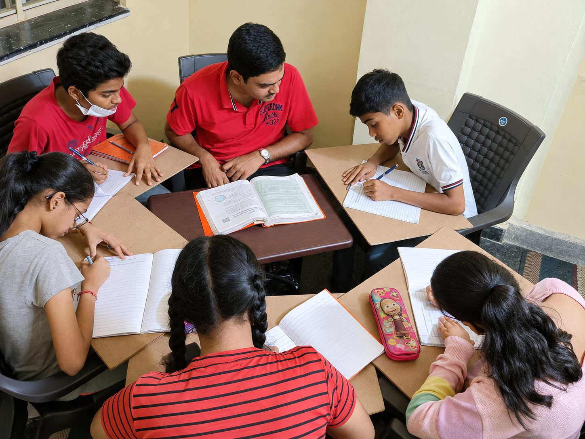
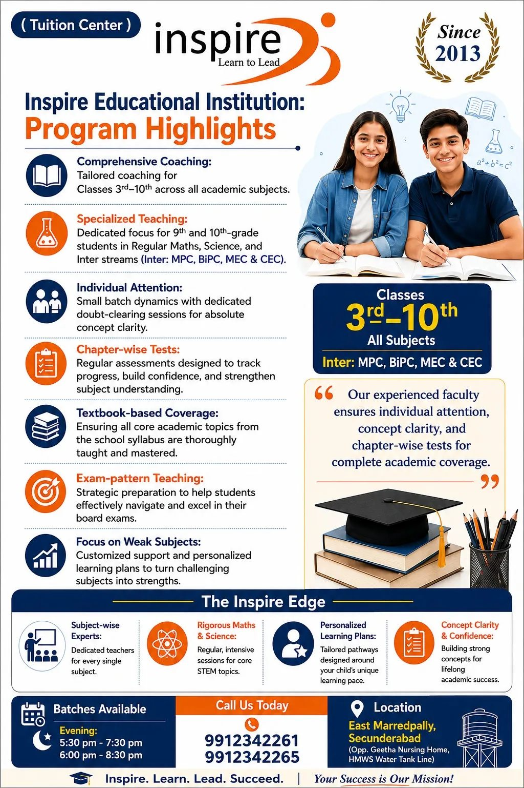

01 / SCHOOL FOUNDATION
✎
Classes 3–8
All-subject support with textbook coverage, foundational concepts, consistent practice and doubt clarification.
A welcoming place for students to understand concepts, ask questions with confidence and grow stronger — one lesson at a time.


Inspire Educational Institutions offers the focused support of a tuition centre in a familiar home-based setting in East Marredpally. We believe students learn better when they can ask questions freely and receive attention where they need it.
Our approach combines textbook coverage, regular practice, doubt-clearing and exam-focused preparation to build lasting confidence.
Clear academic guidance tailored to the different needs of school and Intermediate students.
All-subject support with textbook coverage, foundational concepts, consistent practice and doubt clarification.
Special focus on Maths and Science, chapter-wise tests, revision and examination-pattern preparation.
Academic support for Intermediate streams. Contact us to confirm current subject and batch availability.
Practical learning priorities designed around each student's progress.
Small-batch learning and room to ask questions.
Focused guidance across academic subjects.
Regular assessments to identify and close learning gaps.
Consistent practice for strong fundamentals.
Revision aligned with school examination patterns.
Comfortable learning that encourages confidence.
A consistent rhythm that makes learning clearer and more manageable.
Discuss the student's learning needs.
Build concepts with syllabus-based teaching.
Reinforce learning with exercises and revision.
Use tests to guide the next steps.
A glimpse of the focused, friendly study environment and small-group guidance at Inspire.
These evening options appear in Inspire's supplied promotional materials. Please confirm the current schedule, fees and available seats.
Everything you need before getting in touch.
Classes 3–10 and Intermediate (MPC, BiPC, MEC, CEC) are listed in the supplied materials. Confirm subjects directly.
CBSE, ICSE and SSC are frequently mentioned. Some posters also mention Cambridge and IB; please confirm current availability.
At the home-based tuition centre in East Marredpally, opposite the HMWS Water Tank, near Shenoy Hospital.
You can enquire about a demo class. Please confirm whether a free demo is currently offered.
Current fees are not provided in the supplied materials. Contact the centre for details.
The shared brief describes students coming to the tutor's home. Other formats are not confirmed.
Tell us the class and subject. We'll help you take the next step.
Opp. HMWS Water Tank, behind Shenoy Hospital, Secunderabad – 500026, Telangana.
Get directions ↗Confirm subjects, batches, fees and demo availability.